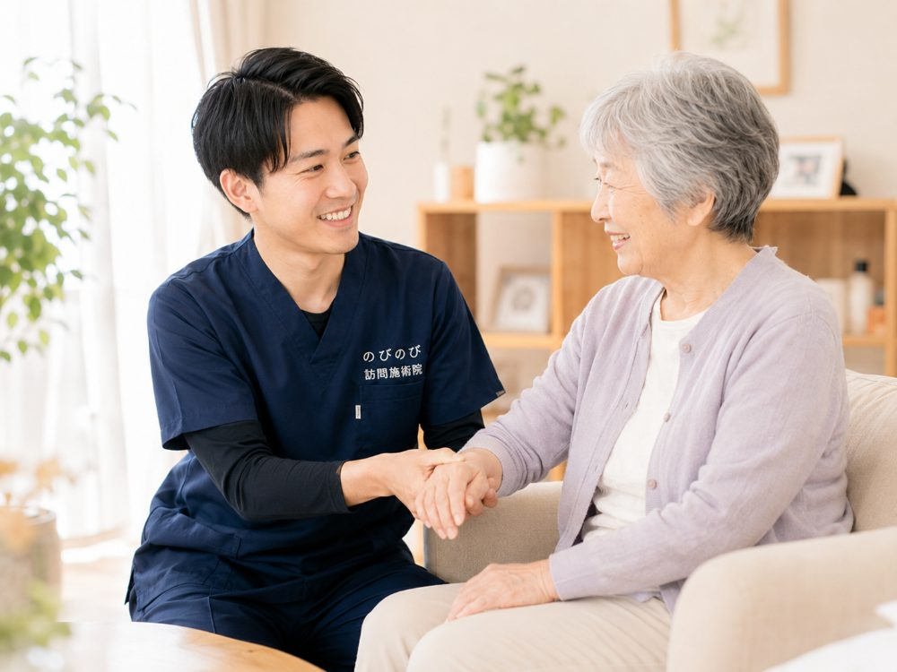

「ペースメーカーが入っているけれど、鍼を打って平気だろうか」「血液をさらさらにする薬を飲んでいるのに大丈夫かしら」。持病があると、鍼灸を受けてよいのか迷ってしまいますよね。結論から言えば、多くの場合、体の状態に配慮したうえで受けていただけます。ただし、安全のためにいくつか事前に伝えていただきたいことがあります。この記事で、その確認のしかたと相談の進め方を順にお話しします。
この記事のポイント
ペースメーカーを使っている方、糖尿病・高血圧・心臓の病気のある方、血液をさらさらにする薬を飲んでいる方でも、多くの場合、体の状態に配慮して訪問鍼灸を受けられます。要は、持病・お薬・体内の医療機器を施術前に必ずお伝えいただくこと。それをもとに、電気を使う鍼を避ける、刺激を穏やかにする、施術する場所を選ぶといった配慮をします。判断に迷うときは主治医に確認したうえで進めます。医師が必要と認め通院がむずかしい場合は保険を使え、1割負担で1回約395円が目安です。
まず、持病やお薬を必ずお伝えください
鍼灸を安全に受けていただくうえで、いちばんの土台になるのが、持病・飲んでいるお薬・体内に入れている医療機器を施術前にお伝えいただくことです。ご本人が細かく説明しにくければ、ご家族の言葉やお薬手帳の情報でかまいません。「持病があると断られるのでは」と身構える必要はなく、むしろ正しく知らせていただくほど、その方に合った安全な進め方を選べます。
うかがった情報をもとに、施術のやり方、刺激の強さ、避けたほうがよい部位や方法を判断していきます。何を伝えればよいか迷うときは、通院している病気、飲んでいる薬、手術や医療機器の有無を教えていただければ十分です。隠さずお話しいただくことが、安心して続けられる第一歩になります。
ペースメーカーを使っている方の場合
ペースメーカーや植込み型の医療機器を使っている方は、鍼に微弱な電気を流す方法（電気鍼）が機器に影響する可能性があります。そのため、こうした電気を用いる方法は使わずに施術します。電気を使わない通常の鍼やお灸、手技であれば、機器の周辺を避けるなど配慮しながら受けていただけることが多いです。
まずは機器の種類や、いつ入れたか、最近の調子はどうかといったことをお聞かせください。そのうえで、判断に迷う点があれば主治医にも確認したうえで進めます。ご自身では判断のつきにくいところなので、遠慮なくお尋ねいただければと思います。
血液をさらさらにする薬を飲んでいる方の場合
ワルファリンなど血液を固まりにくくする薬を飲んでいる方は、鍼のあとに内出血（あざ）ができやすいことがあります。危険というわけではありませんが、細い鍼を選び、施術のあとはその部位をしばらく押さえるなど、内出血を抑える配慮をして行います。
あざができやすいこと、消えるまで少し時間がかかることは、あらかじめお伝えしたうえで進めます。気になる方には、目立ちにくい部位を中心にする、刺激を控えめにするといった調整もできますので、心配な点はお話しください。
糖尿病や皮膚の弱い方の場合
糖尿病のある方は、感覚が鈍くなっていたり、傷が治りにくかったりすることがあります。とくに足先などは、やけどや小さな傷が思わぬトラブルにつながることもあるため、お灸の熱さや施術する場所には十分注意して行います。
皮膚が弱い方やむくみのある方も同じように、その日の肌の状態を見ながら、穏やかな刺激で進めます。施術のなかで気になる皮膚の変化に気づいたときは、その場でお伝えし、必要に応じて医療機関への相談をおすすめすることもあります。
心臓や血圧の病気がある方の場合
心臓の病気や高血圧のある方も、多くの場合は体の状態に配慮しながら受けていただけます。体調のすぐれない日は無理をせず、その日の血圧や体の様子をうかがったうえで、刺激を穏やかにするなど加減して行います。
施術中に気分が悪くなったり、いつもと違う感じがしたりしたときは、我慢せずすぐにおっしゃってください。安全を最優先に、その日の状態に合わせて負担にならない範囲で進めます。
判断に迷うときは主治医に確認します
持病や治療の内容によっては、鍼灸を受けてよいかどうか、その場では判断がむずかしいこともあります。そうしたときは、自己判断で進めず、主治医に確認をとったうえで施術を行います。無理に受けていただくことはありません。
保険を使う際には、いずれにしても医師の同意が必要になります。かかりつけの先生と連携しながら、その方が安心して受けられる形を整えていきますので、判断に迷う点があれば一緒に確かめていきましょう。
がんの治療中や、透析を受けている方の場合
がんの治療を受けている方や、人工透析を受けている方でも、体の状態に配慮しながら受けていただけることがあります。治療の時期や体調によっては、刺激を控えめにしたり施術する場所を選んだりする必要があるため、まずは現在の治療内容と体調をていねいにうかがいます。
だるさや痛み、こわばりといったつらさを和らげるお手伝いができる場合もありますが、受けてよい時期かどうかは主治医の判断を土台にします。少しでも不安があれば遠慮なくお話しください。できる範囲で、その方に合った形を、ご希望をうかがいながら決めます。
費用と保険のこと
持病のある方でも、慢性的な痛みなどについて医師が鍼やお灸を必要と認め、通院がむずかしい状態であれば、はり・きゅうの医療保険で受けられます。費用は1回の施術で総額3,950円、自己負担が1割の方で約395円が目安です。別途の出張費（出張料・交通費）はかからず、エリア内はどこでも同額です。
たとえば週1回なら月およそ1,580円、週2回なら月およそ3,160円（いずれも1割の方）が目安です。この費用は医療保険で計算し、介護保険の限度額とは別の枠でまかなわれます。お支払いは月ごとにまとめてお願いしています。持病の心配に加えて費用の不安まで抱え込まずに、まずはご相談ください。
お申し込みからの流れ
はじめに、お電話などで持病やお薬、お使いの医療機器、通院の様子、かかりつけの医療機関をお聞かせください。お体の状態をていねいにうかがったうえで、安全に配慮した進め方をご案内します。判断に迷う点は自己判断せず、必要に応じて主治医に確認をとってから始めます。
同意書をそろえる手続きは、のびのびが力になれればと思います。持病があるからと施術をあきらめていた方も、体の状態に合わせて配慮しながら、無理なく続けてくださっています。気になることは、どんなことでもお尋ねください。
よくある質問
ペースメーカーがあっても鍼灸は受けられますか？
電気を使う鍼は避け、通常の鍼やお灸、手技で機器の周辺に配慮しながら行えることが多いです。まず機器の種類やお使いの状況をうかがい、判断に迷う点は主治医に確認したうえで進めます。
血液さらさらの薬を飲んでいますが大丈夫ですか？
内出血ができやすいため、細い鍼を使い、施術後にその部位を押さえるなど配慮して行います。危険ではありませんが、あざができやすく消えるまで少し時間がかかることをふまえて進めます。
糖尿病でもお灸を受けられますか？
感覚が鈍い方や傷が治りにくい方には、お灸の熱さや場所に十分注意して穏やかに行います。足先など気になる部位は、その日の肌の状態を見ながら進めます。
持病のことは誰に伝えればよいですか？
施術前に、ご本人やご家族、お薬手帳などでお伝えください。それをもとに安全な進め方を判断し、必要に応じて主治医とも連携します。細かく説明できなくても、通院中の病気やお薬がわかれば十分です。
がんの治療中や透析中でも受けられますか？
体の状態に配慮しながら受けていただけることがあります。治療の時期や体調によっては刺激を控えめにするなどの調整が必要なため、受けてよい時期かどうかは主治医の判断を土台にします。まずは今の治療内容をお聞かせください。
持病があると費用は高くなりますか？
変わりません。1回総額3,950円で1割の方は約395円が目安、別途の出張費もかかりません。医療保険にもとづく料金で、介護保険の限度額とは別枠。お支払いは月ごとにまとめていただき、その月の明細をお渡しします。